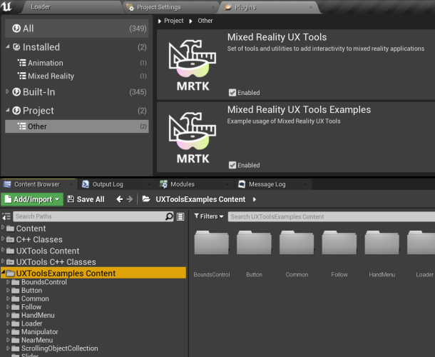
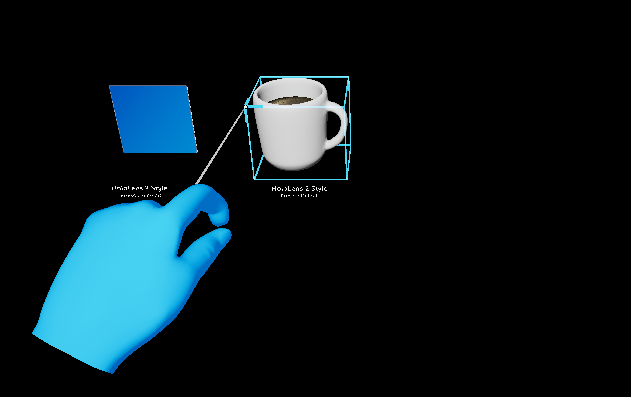

UX Tools 0.11.0 release notes
This release of the UX Tools supports only HoloLens 2. Support for other MR platforms remains a goal for us and we are hoping to be able to deliver it in the near future.
Unreal 4.26 required.
What's new
These are some of this release's highlights. For a more comprehensive list of changes see the full change list.
Examples plugin
UX Tools example scenes have been moved to a separate plugin to make it easier to incorporate them as a starting point for new projects.

Improved hand menu activation using user gaze
The palm-up constraint has gained the Require Gaze option to ensure the user is deliberately trying to use the constraint and help prevent false activations. This is particularly useful for world-locking hand menus as it prevents the menu from unintentionally re-attaching to the hand.

Pinch slider improvements
The pinch slider actor has gained a number of quality of life improvements. These include:
- Customizable minimum / maximum values.
- GetValue, SetValue and OnSliderUpdateValue exposed directly on the actor to allow easy access to the slider's value relative to the custom min / max value. (note: if using the underlying
UxtPinchSliderComponent, it's value will still be in the range 0-1) - Stepped movement along the slider's tick marks.

Bounds control improvements
Constraint support
Manipulation constraints (i.e. derived from UUxtTransformConstraint) now also apply to manipulations performed via bounds control, making it easier to produce a consistent behavior when manipulating transforms.
Uniform scaling
Uniform scaling now works as expected.
| Before | After |
|---|---|
 |
 |
Improved affordance selection via hand ray
Previously, bounding box affordances were only revealed when hovering directly over them or over the bounding box contents. This could make them difficult to select if the bounding box was not a tight fit. We now also reveal affordances when the ray hovers the box itself.
| Before | After |
|---|---|
 |
 |
New scale constraint
A new constraint (UxtMinMaxScaleConstraint) to limit how much an actor can be scaled down or up via bounds control and manipulation components.

Improved editor categories
We have reworked the editor categories used by UX Tools to produce a more clear, simple and consistent interface.

Breaking changes
UxtGenericManipulatorComponent
The Target Component now uses a component picker to select its target. Due to this, the generic manipulator can no longer target components on other actors when being configured from the editor.
The ManipulationModes setting on the generic manipulator has been moved up the hierarchy to the UxtGrabTargetComponent and renamed to GrabModes. Its associated enum has been renamed to EUxtGrabMode.
This change means that the UxtGrabTargetComponent will now respond to its GrabModes and will only trigger grab/release events when its grab mode has been satisfied. (e.g. when using only two handed grabs, a grab event is only triggered when both hands are grabbing the object)
UxtGrabTargetComponent
The UxtGrabTargetComponent has been converted from a SceneComponent to an ActorComponent. This affects the classes derived from UxtGrabTargetComponent such as the UxtManipulatorComponentBase and the UxtGenericManipulatorComponent.
Most blueprints will continue to work with no issues but any blueprints that access one of these components as a variable will need to have the component removed and re-added for them to compile.
UxtHandConstraintComponent
UUxtHandConstraintComponent::IsHandUsableForConstraint() is now a non-const member function.
UxtPinchSliderActor
As part of adding a customizable minimum / maximum slider value, the InitialValue property has been replaced with a Value property. As part of this change, the GetInitialValue() and SetInitialValue(...) functions on the UxtPinchSliderActor are now called GetValue() and SetValue(...).
Previous settings can be easily carried forward:
- Add
+PropertyRedirects=(OldName="UxtPinchSliderActor.InitialValue", NewName="UxtPinchSliderActor.Value")to DefaultUXTools.ini. (found in the plugin's configuration folder) - Re-save any levels with sliders to update their properties.
- Remove the property redirect from DefaultUXTools.ini.
UxtTransformConstraint
The UxtTransformConstraint has been converted from a SceneComponent to an ActorComponent. This affects the classes derived from UxtTransformConstraint such as the UxtFaceUserConstraint, the UxtFixedDistanceConstraint, the UxtFixedRotationToUserConstraint, the UxtFixedRotationToWorldConstraint, the UxtMaintainApparentSizeConstraint, the UxtMoveAxisConstraint and the UxtRotationAxisConstraint.
Most blueprints will continue to work with no issues but any blueprints that access one of these components as a variable will need to have the component removed and re-added for them to compile.
UxtBoundsControlComponent
Configuring each affordance's action separately is no longer allowed so, if any feature relied on that, an extension to the UUxtBoundsControlComponent should be implemented instead. Besides that, the EUxtAffordanceAction::Resize has been removed, so only EUxtAffordanceAction::Scale (action of corner affordances) can scale the object in the direction that the grabbed affordance is on, leaving the opposite affordance pinned to its location at the start of the interaction.
Locked Axes property in UUxtBoundsControlConfig data assets no longer exists. Therefore, if you were using the Locked Axes flags to constrain movement or rotation of an object, you should now add the appropriate UUxtMoveAxisConstraint or UUxtRotationAxisConstraint (respectively) instead.
The MinimumBoundsScale and MaximumBoundsScale properties have been removed in favor of using the UxtMinMaxScaleConstraint for controlling this behavior.
Known issues
UxtGenericManipulatorComponent
When the target component's rotation does not match its parent actor's rotation, the parent actors rotation will be applied to the target component when manipulation is started.
Full change list
| Commit | Description |
|---|---|
| 1648ad01 | Add examples as dependency |
| 12e0c5a2 | Roll back rotation constraint's modifications |
| 253d2b9f | Add enabled UXTools plugin to .uproject |
| a9cd53ce | Fix spaces in some categories |
| bda99d59 | Improve descriptions and labels in example scenes |
| db6127f6 | Refactor to make scale constraint easier |
| e44c7782 | Improve Bounds Control and constraints' docs |
| f0199b94 | Fix level change crash |
| 3384b9d1 | Remove AR Session workaround for MobilePreview |
| 0acbbad0 | Refactor/normalize all categories |
| 1c77f51b | Stepped slider gif + heading fixups |
| 9f29c2ab | Disabling unfinished "Mask Logic" in Scrolling Object Collection |
| e42416f7 | Moving Home Button to "On Release" |
| 1b7a5a09 | Clarify breaking changes after testing upgrade from 0.10 |
| 70adb554 | Update CI editor version to 4.26.0 (release) |
| ce9742c7 | Adding plugin images. |
| 2a0a5fb5 | Implement min/max scale constraint |
| d32355c3 | Rewrite bounds control and fix rotation constraint |
| 099b6115 | Add collision box to BoundsControlComponent |
| 7f58f198 | Update version to 0.11.0 |
| 2afc85b1 | Fixing invalid enum value metadata tags from UxtScrollingObjectCollection |
| 692c3365 | Fix one handed only manipulation not responding if grabbed by both hands |
| f6588058 | Update UXTools to UE4.26 |
| 0c4ccdcf | Manipulator improvements |
| 50a77125 | Add include to fix CI build |
| c8da2565 | Display current git commit in the Loader scene (packaged game only) |
| d2a184e0 | Add gaze requirement to PalmUpConstraint and Hand Menu |
| fe8e77aa | Update docs with information about Examples plugin |
| e7c91b2f | Use 2D corner handle on Slate2D example bounds control |
| c0947793 | Enable eye tracking in UXToolsGame package |
| 01562b9c | Slider improvements |
| d5271e7c | Update editor version to 4.25.4 |
| c31e8318 | Move Examples into a separate plugin |
| 3b6173fe | Cook Warning Fixes |
| 0b84cca9 | Enable debug info in CI package and add symbols to artifact |
| eda87709 | Export all public interfaces |
| e62fbc89 | Removing all built data and changing levels to not generate static lighting data. |
| 6ad0acf8 | Introduce roll for vertical normals |